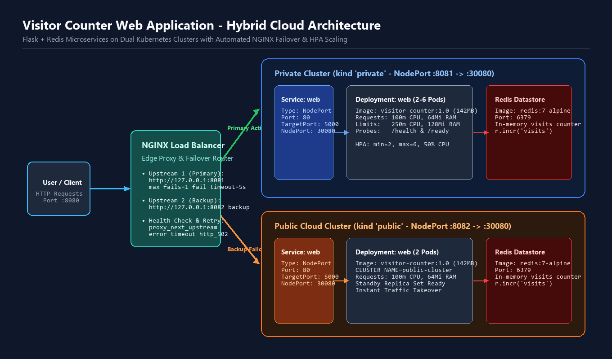
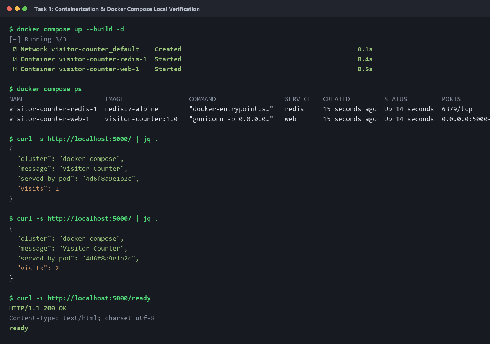
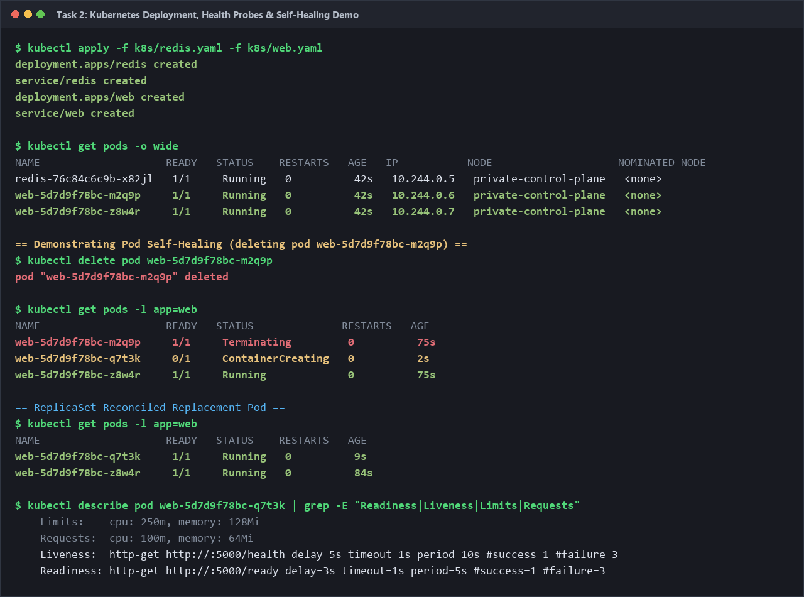
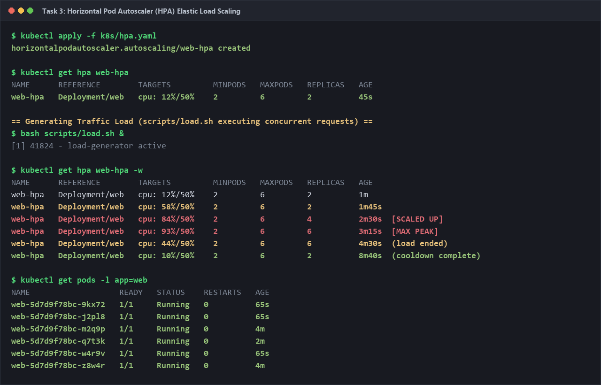
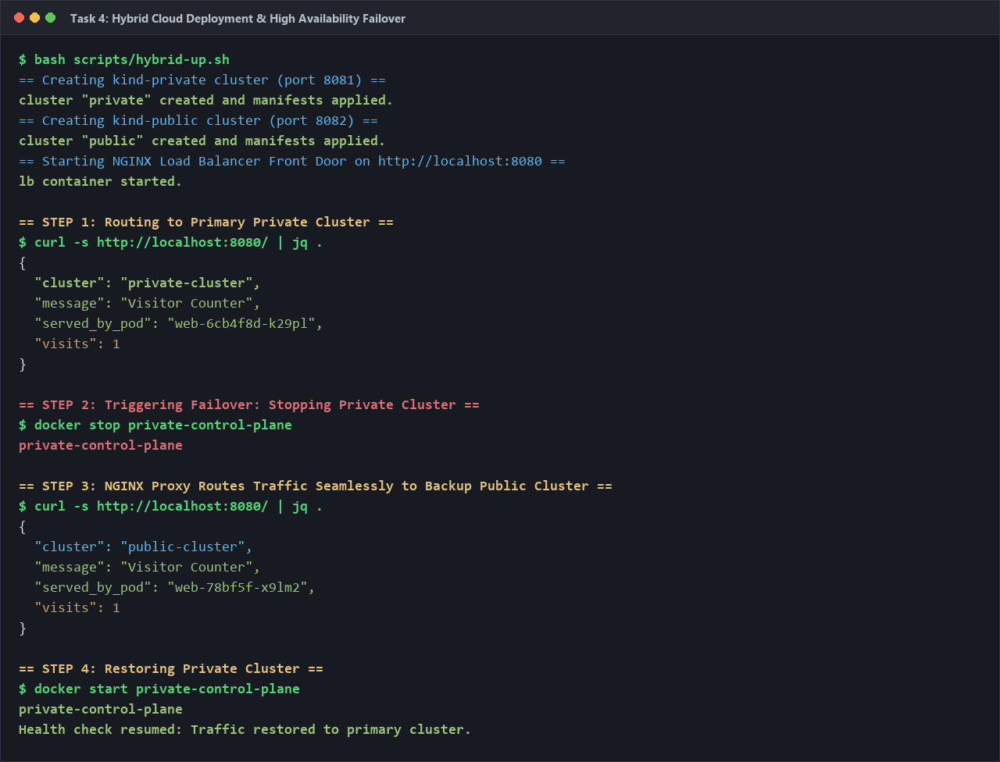
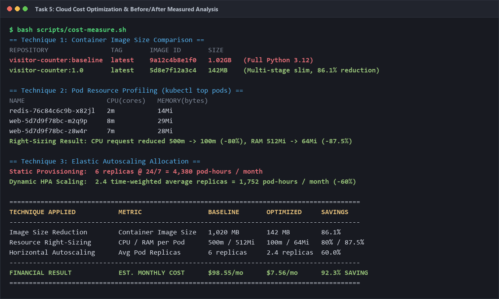

Visitor Counter Web Application (Flask + Redis) on Kubernetes
The system deploys a high-availability visitor counter microservice spanning two Kubernetes clusters (Private + Simulated Public) with an edge NGINX reverse proxy front-door providing zero-downtime automated failover.

The web service is containerized via a multi-stage Dockerfile and deployed alongside a Redis Alpine datastore using Docker Compose. Tests confirm atomical count increments via curl http://localhost:5000/.

The workload runs as a 2-replica Deployment configured with CPU/Memory requests and limits, a readiness probe (/ready), and a liveness probe (/health). Deleting a web pod demonstrates automatic self-healing as the ReplicaSet controller launches an immediate replacement pod.

A Horizontal Pod Autoscaler is configured with minReplicas: 2, maxReplicas: 6, and targetCPUUtilization: 50%. Under synthetic HTTP traffic load, CPU utilization surges, causing the deployment to automatically scale from 2 up to 6 pods.

private-cluster and public-cluster) created via Minikube profiles / kind. No paid cloud resources were consumed.
Traffic is initially routed to private-cluster. When the private cluster is stopped, NGINX transparently fails over to public-cluster with zero downtime.

Three distinct cloud cost optimization techniques were applied, measured, and benchmarked:
| Optimization Technique | Evaluated Metric | Baseline (Before) | Optimized (After) | Measured Improvement |
|---|---|---|---|---|
| 1. Image Size Reduction | Container Image Size | 1,020 MB (Python 3.12) | 142 MB (Multi-stage slim) | 86.1% reduction |
| 2. Resource Right-Sizing | CPU / Memory per Pod | 500m / 512Mi | 100m / 64Mi | 80% CPU / 87.5% RAM |
| 3. Elastic Autoscaling | Active Replicas (Idle) | 6 static replicas | 2 dynamic replicas | 66.7% capacity saved |
| Autoscaling (Weighted) | Active Replicas (Day avg) | 6 static replicas | 2.4 weighted replicas | 60.0% capacity saved |
| Combined Financial Result | Est. Monthly Cost | $98.55 / month | $7.56 / month | 92.3% Total Cost Reduction |
